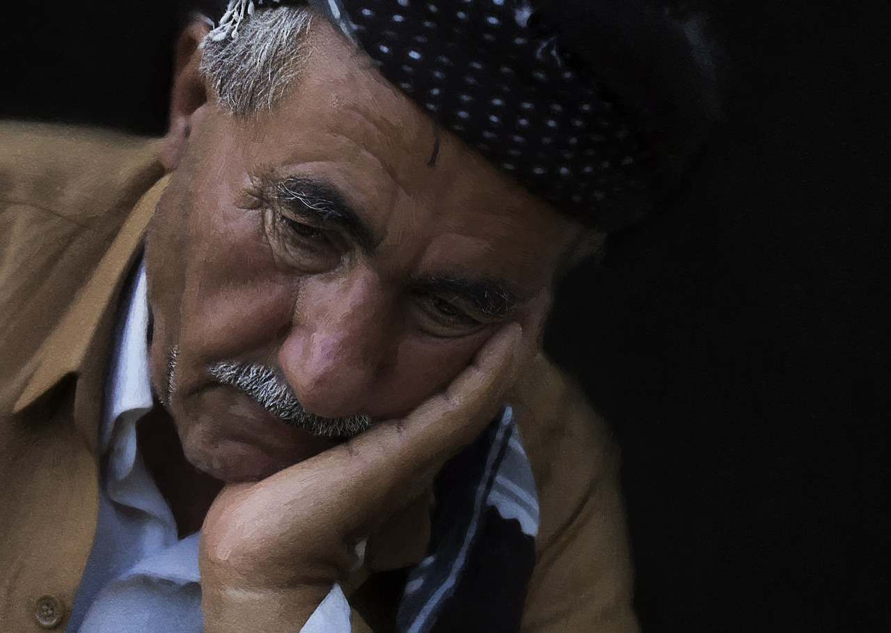

"Some days are just bad days, that's all. You have to experience sadness to know happiness, and I remind myself that not every day is going to be a good day, that's just the way it is!"
HADITH
The Prophet (ﷺ) said, "No fatigue, nor disease, nor sorrow, nor sadness, nor hurt, nor distress befalls a Muslim, even if it were the prick he receives from a thorn, but that Allah expiates some of his sins for that."
Sahih al-Bukhari 5641, 5642
SHORT STORY
"A Tragedy or Blessing?"
Years ago in Scotland, the Clark family had a dream. Clark and his wife worked and saved, making plans for their nine children and themselves to travel to the United States. It had taken years, but they had finally saved enough money and had gotten passports and reservations for the whole family on a new liner to the United States.
The entire family was filled with anticipation and excitement about their new life. However, seven days before their departure, a dog bit the youngest son. The doctor sewed up the boy but hung a yellow sheet on the Clarks' front door. Because of the possibility of rabies, they were being quarantined for fourteen days.
The family's dreams were dashed. They would not be able to make the trip to America as they had planned. The father, filled with disappointment and anger, stomped to the dock to watch the ship leave - without the Clark family. The father shed tears of disappointment and cursed both his son and God for their misfortune.
Five days later, the tragic news spread throughout Scotland - the mighty Titanic had sunk. The unsinkable ship had sunk, taking hundreds of lives with it. The Clark family was to have been on that ship, but because a dog had bitten the son, they were left behind in Scotland.
When Mr. Clark heard the news, he hugged his son and thanked him for saving the family. He thanked God for saving their lives and turning what he had felt was a tragedy into a blessing.
Although we may not always understand, all things happen for a reason.
ART

×
Sit Down, Sad Soul - Poem by Barry Cornwall
SIT down, sad soul, and count
The moments flying:
Come,—tell the sweet amount
That ’s lost by sighing!
How many smiles?—a score?
Then laugh, and count no more;
For day is dying.
Lie down, sad soul, and sleep,
And no more measure
The flight of Time, nor weep
The loss of leisure;
But here, by this lone stream,
Lie down with us, and dream
Of starry treasure.
We dream: do thou the same:
We love—for ever;
We laugh; yet few we shame,
The gentle, never.
Stay, then, till Sorrow dies;
Then—hope and happy skies
Are thine for ever!
WHEN THE FLOWERS ARE SAD
DEAD LEAVES
Like how the trees rebloom their leaves and flowers in the spring after their loss in autumn, your spring will come and your sadness will go and you will bloom again.
DON'T BE SAD
This is a very important reminder for all of us.
We all get sad sometimes, and that’s a normal human feeling.
However, we need to remember that Satan can sometimes use sadness to defeat the believer, turn him/her against Allah, lead them astray and/or turn them to disbelief entirely.
I have recently read a story about a Qur’an teacher who used to stop her students when they recite the following verse about Satan:
“…that he may grieve those who have believed” (Qur’an 58: 10)
And she would repeat the verse again, just to remind her students of the danger of this issue.
The reality is, we all go through certain situations that make us sad. But Satan, if he fails to make people commit sins, he would work on making them ungrateful to Allah and hopeless of any change in their life. Sadness is a great opportunity for him to do that. It is ok to be sad, but if you remain in sadness for too long, you’ll get weaker and your interest in worshipping Allah and doing good deeds will get weaker also and you will start to imagine hopeless scenarios on how things will never get better. You will start forgetting all the good Allah has done for you in the past and all the good you’re living in now because of fixating your mind and heart and energy on the current problem or what you are currently missing.
This feeling of total ingratitude to Allah eventually leads one to disbelief in Him.
As Satan said:
“Then I will come to them from before them and from behind them and on their right and on their left, and You will not find most of them grateful [to You].” (Qur’an 7: 17)
So watch your sadness. Do not allow it to stay too long. There is hope, there is always hope and Allah will always help.
Remember the story of Mary (peace be upon her). Remember that she also felt overwhelmed because of the situation she was in, to the extent that she said:
“And the pains of childbirth drove her to the trunk of a palm tree. She said, “Oh, I wish I had died before this and was in oblivion, forgotten.” ( Qur’an19: 23)
But then Allah immediately consoled her and reminded her not to dwell in sadness and to just take the means available and then things will be resolved.
“But he called her from below her, “Do not grieve; your Lord has provided beneath you a stream. And shake toward you the trunk of the palm tree; it will drop upon you ripe, fresh dates. So eat and drink and be contented. And if you see from among humanity anyone, say, ‘Indeed, I have vowed to the Most Merciful abstention, so I will not speak today to [any] man.’ ” ( Qur’an 19: 24-26)
So always remember that. When you are sad, try to do the following:
1- Be in good company of righteous friends.
2- Try to help someone in need.
3- Seek refuge in Allah from the accursed Satan ALOT. Listen to the words of Allah from the Qur’an and recite them.
4- write a list of the many things Allah has blessed you with.
5- And remember that most definitely Allah brings ease with the hardship. “For indeed, with hardship [will be] ease. Indeed, with hardship [will be] ease.” ( Qur’an 93: 5-6)
6- Also make this dua:
“Allaahumma ‘innee ‘a’oothu bika minal-hammi walhazani, wal’ajzi walkasali, walbukhli waljubni, wa dhala’id-dayni wa ghalabatir-rijaal”
“O Allah, I seek refuge in You from grief and sadness, from weakness and from laziness, from miserliness and from cowardice, from being overcome by debt and overpowered by men (i.e. others).”
7- And remember all the verses in which Allah has reminded the believers to not be sad….
“So do not weaken and do not grieve, and you will be superior if you are [true] believers.” (Qur’an 3: 139)
“And grieve not over them or be in distress from what they conspire.” (Qur’an 27:70)
“So let not their speech grieve you. Indeed, We know what they conceal and what they declare.” (Qur’an 36: 76)
“And We inspired to the mother of Moses, “Suckle him; but when you fear for him, cast him into the river and do not fear and do not grieve. Indeed, We will return him to you and will make him [one] of the messengers.” ( Qur’an 28: 7)
“So We restored him to his mother that she might be content and not grieve and that she would know that the promise of Allah is true. But most of the people do not know.” (28: 13)
The promise of Allah is true, there will always be relief and there is always hope. Get out of the sadness and do something positive that you love and that benefits people and insha’Allah, you will benefit as well and you will be assured. Afterall, this entire life is temporary. On the Day of Judgement we’ll feel that we didn’t live but for a few hours, and there is nothing in this temporary world that is worth damaging your relationship with your Eternal Creator, The Owner of The Day of Judgement, The Most Merciful.